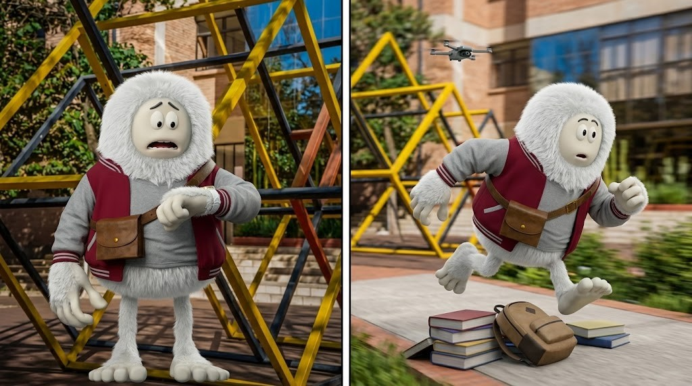
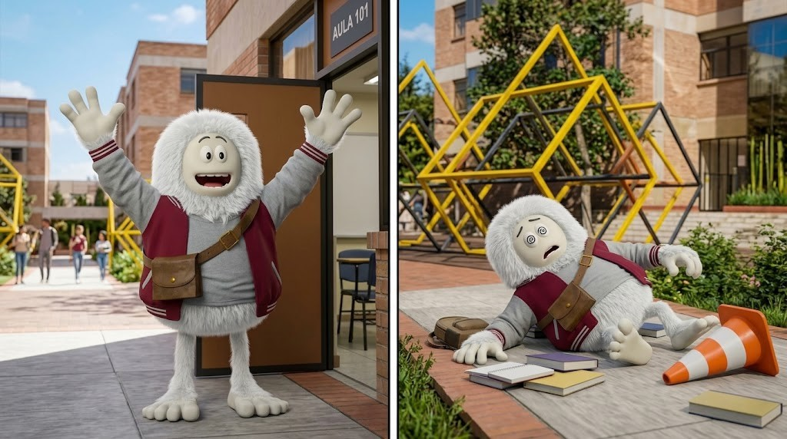

CONTEXTO NARRATIVO
El Campus y la Problemática Inicial
El juego se desarrolla en el campus de la universidad, recorriendo los pasillos de piso cerámico, dispensadores de agua, vistas hacia los jardines y puertas de laboratorios.
Al principio, el Yeti Universitario camina tranquilo con su chamarra guinda y su bolso cruzado, confiado de que tiene tiempo de sobra. Sin embargo, al mirar su reloj de pulsera en el patio, entra en pánico: faltan muy pocos minutos para que se cierre el laboratorio de desarrollo.
ARCO ARGUMENTAL
La Carrera por el Éxito
Para llegar a la defensa final y no perder la materia, el Yeti debe emprender una veloz carrera continua esquivando todos los objetos cotidianos olvidados en el camino.
El juego construye una secuencia única en tiempo real: cada partida genera un camino aleatorio de obstáculos que exige reflejos rápidos para conseguir la victoria (llegar al Aula 101) o enfrentar la derrota tras tropezar y agotar tus vidas.

El descubrimiento: El Yeti mira su reloj y asustado comienza a correr por el patio saltando pilas de libros y mochilas.

El desenlace: Celebración al cruzar la puerta del aula de cómputo o el agotamiento tras tropezar en el camino.